Ph.D. Candidate, Sport Biomechanics
Motion Innovation Center · Korea National Sport University
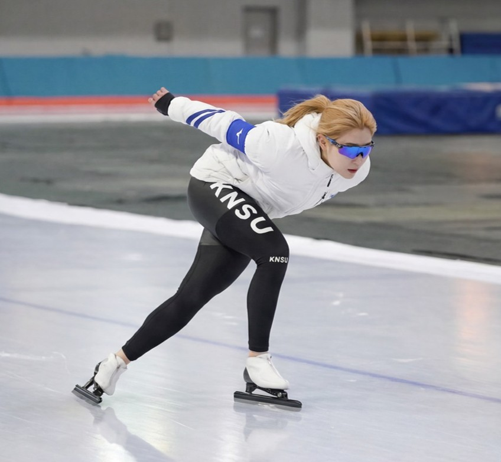
I am Jung-Min Yoon, a Ph.D. student in Biomechanics at Korea National Sport University (KNSU). I currently conduct research at the Motion Innovation Center under the supervision of Prof. Sang-Kyoon Park, focusing on the biomechanical characteristics of human movement.
My work spans sports biomechanics, gait analysis, wearable sensor technologies, and digital health, with the goal of improving athletic performance, preventing falls, and promoting health and well-being.
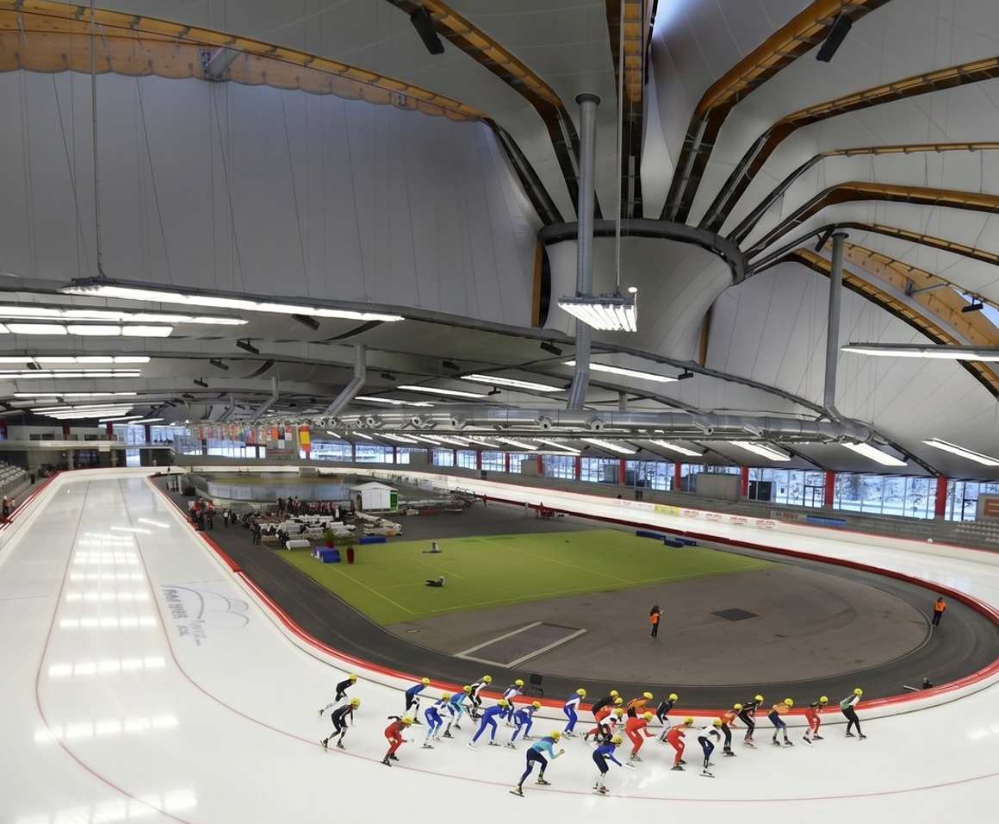
“I do not aspire to be a researcher who simply publishes scientific papers. I aspire to research that creates meaningful and tangible benefits for people’s lives.”
Twelve years of competitive skating shape how I see, measure, and model human movement today.
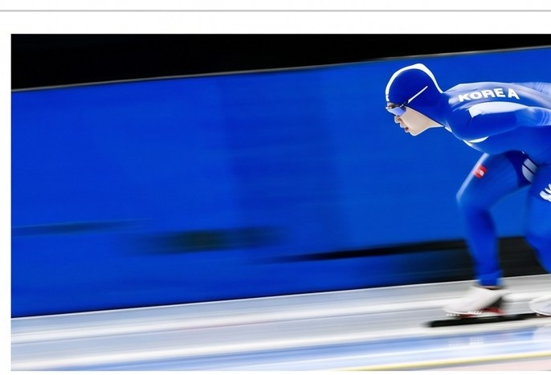
Where elite-sport biomechanics meets everyday movement and emerging sensing technology.
Performance analysis of elite athletes through 3D motion capture and force-plate measurement.
Lower-limb kinematics, kinetics, and inter-joint coordination across ages and terrains.
Smartwatch, EEG, and IMU-based assessment of movement and physiology beyond the laboratory.
Data-driven systems for fall prevention, gait training, and quality-of-life improvement.
From competitive ice skater to biomechanist — eight years and counting, one institution.
Applied biomechanics work conducted as a research assistant at the Motion Innovation Center.
Physiological and biomechanical functional verification of a recovery-focused footwear product.
Fit and biomechanical outcome assessment across a walking-shoe product line.
Effects of cadence cueing on selective attention and gait performance.
Development of an on-demand customized insole system linked to a companion application.
Two peer-reviewed journal articles — translating laboratory biomechanics into the published record.
Expand each project for the research question, method, and findings behind the headline.
Do lower-limb joint kinetics drift across consecutive slide-board strokes in elite sprint speed skaters?
3D motion capture and inverse dynamics — first, middle, and last strokes compared across the training set, performed on an instrumented slide board mounted with a custom force plate.
Ankle plantarflexion moment and knee/hip extensor moments progressively decline from first to last strokes — quantifying within-session neuromuscular drift in elite skaters.
Informs fatigue-aware training load monitoring for slide-board conditioning programs.
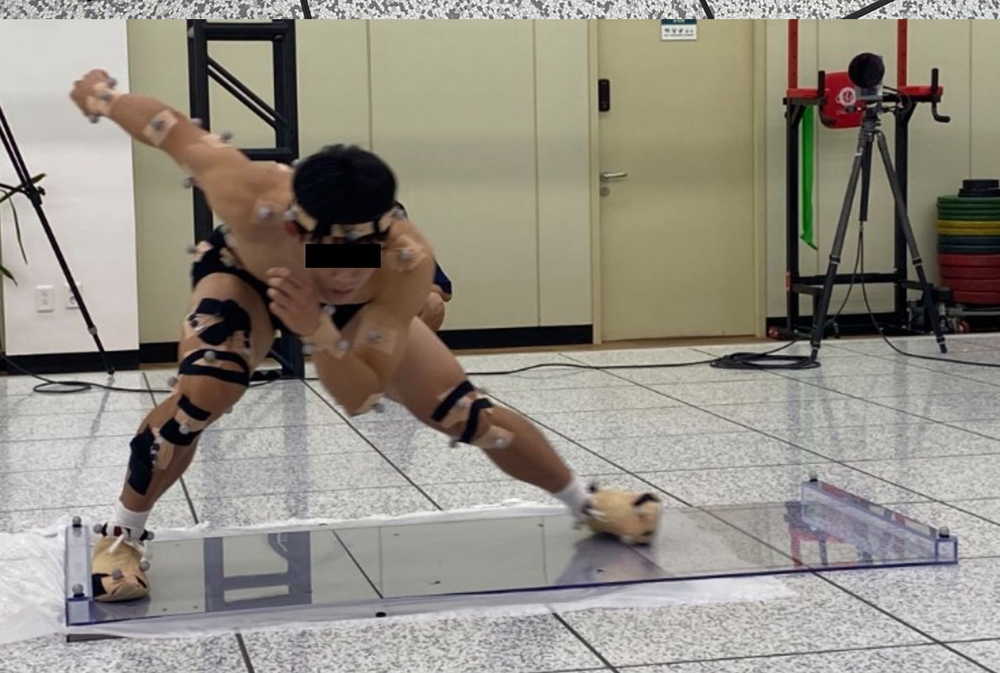
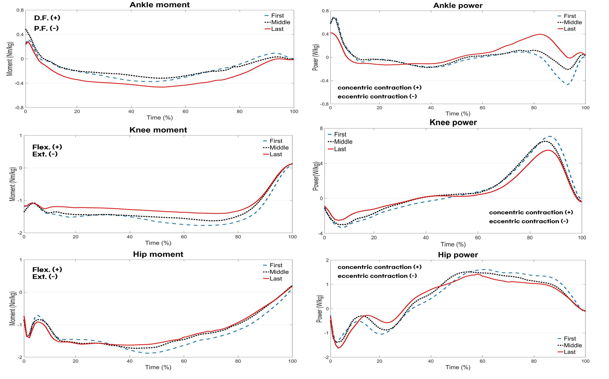
How does foot-direction angle (toe-in / neutral / toe-out) alter lower-limb joint mechanics during side-step cutting?
Foot angle was standardized with a protractor and marked with tape per condition; side-step distance was fixed at 240 cm. 3D motion capture recorded ankle, knee, and hip angle, angular velocity, moment, and power.
Toe-in cutting increased ankle dorsiflexion and knee flexion moments, while toe-out shifted load toward hip flexion/extension — identifying foot-angle as a modifiable cutting-mechanics variable.
Provides a biomechanical basis for footwork coaching cues aimed at reducing knee-joint loading during cutting maneuvers.
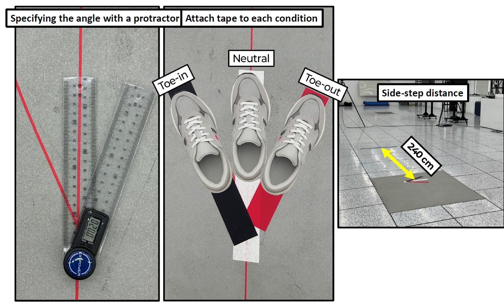
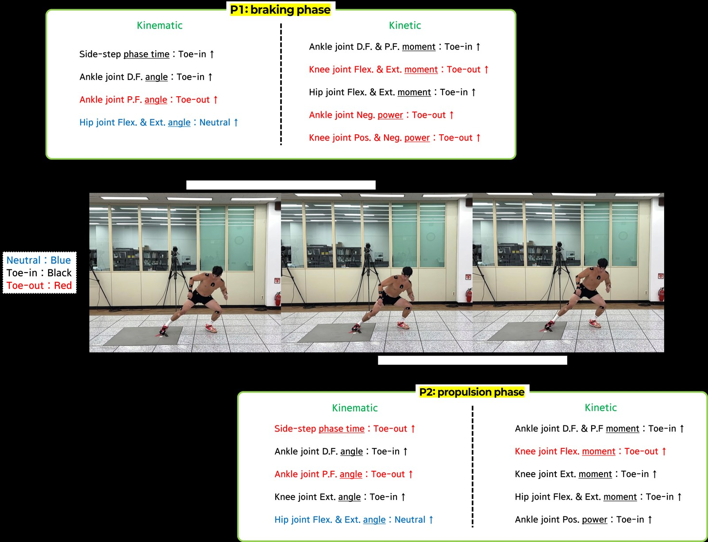
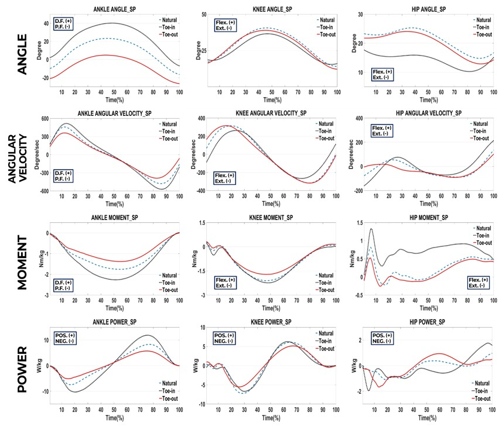
How do lower-extremity joint kinematics, kinetics, and inter-joint coordination differ between younger and older women during downhill walking?
Instrumented split-belt treadmill at controlled downhill grade, full-body 3D motion capture, EMG, force plates, paired younger and older female cohorts.
Joint-level changes at ankle, knee, and hip during the downhill weight-acceptance phase; inter-joint coordination variability as a candidate fall-risk indicator.
Targets early biomechanical markers of age-related decline in downhill gait stability, ahead of clinical fall events.
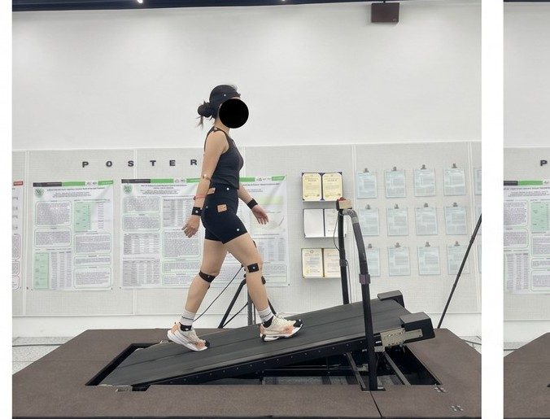
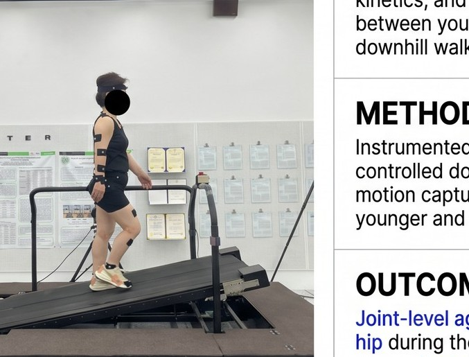
Can wearable sensing and virtual-reality systems improve gait stability and neurophysiological function in middle-aged and older adults?
Year 1 (2025–2026): Compare gait between young and middle-aged adults across flat ground, uneven terrain, and visually distracting environments using wearable smartwatch and EEG measurements.
Year 2 (2026–2027): Introduce real-time head-mounted VR feedback to measure its effect on gait stability and neurophysiological response.
Build evidence-based strategies for fall prevention and personalized gait training before age-related decline becomes severe.
Funded by the National Research Foundation of Korea (NRF) — Doctoral Research Grant in Humanities and Social Sciences, two-year program.
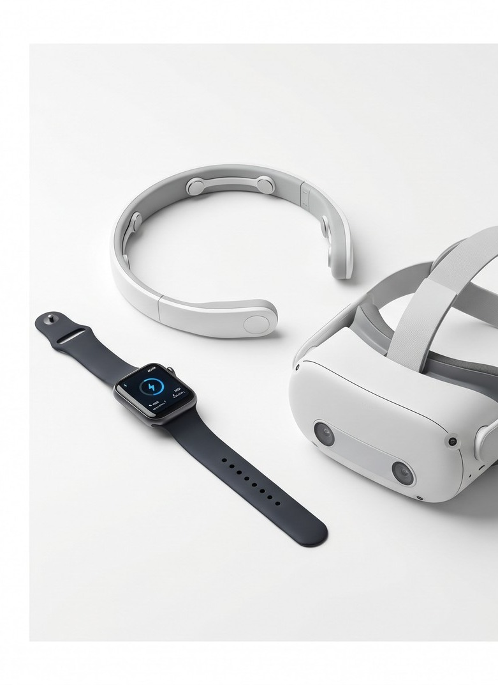
From raw motion capture to applied insight.
Raw 3D marker trajectories are reconstructed into a calibrated skeletal model in Visual3D, where joint centers, segment coordinate systems, and resultant joint moment vectors are computed for inverse-dynamics analysis.
Where biomechanics meets wearable sensing and immersive virtual environments — building evidence-based tools for fall prevention and personalized gait training.
Field capture, presentation footage, and conference posters from the slide-board sprint speed skating study.
A short Visual3D reconstruction isolating a single slide-board stroke cycle, used in conference presentation materials to illustrate the braking-to-propulsion transition analyzed in Project I.
Full-length data-collection footage from the slide-board sprint speed skating study: marker placement, calibration, and repeated stroke trials on the instrumented force-plate slide board.
More posters will be added here as new conference presentations are completed.
A self-prepared Q&A set for the slide-board sprint speed skating study — organized by theme, from study rationale to limitations and future directions.
Motion Innovation Center
Korea National Sport University
1239, Yangjae-daero, Songpa-gu, Seoul, Korea 05541